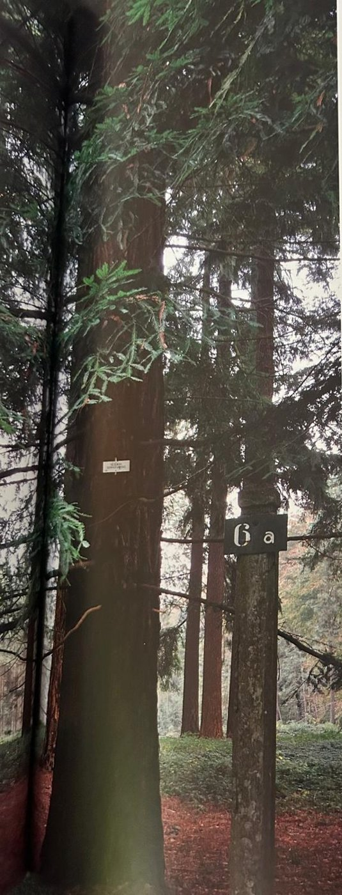
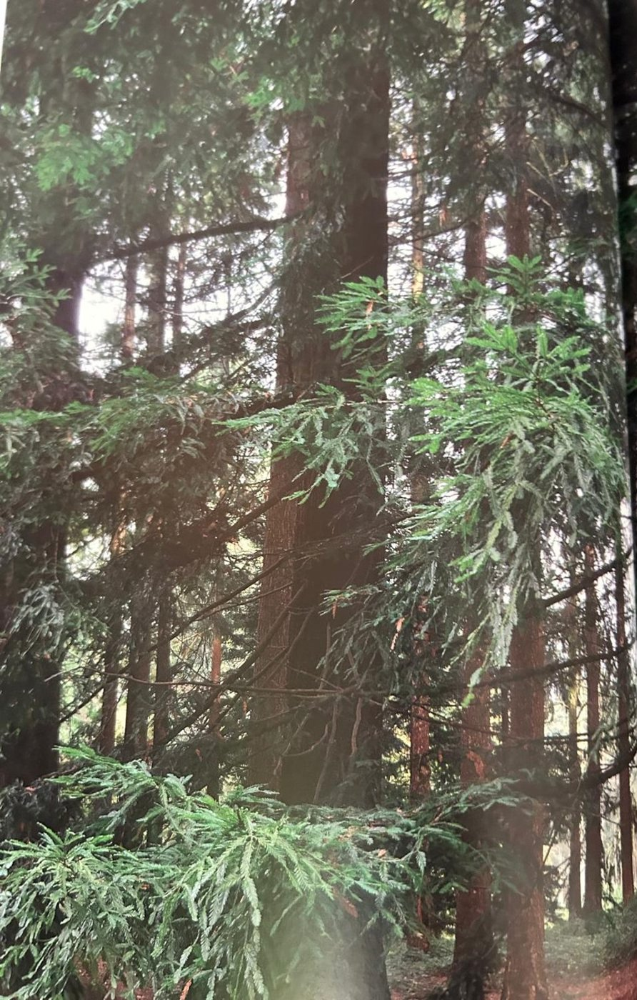

Groepen › Nieuwe Wereld
6. Californië, Kust- en Klamathgebergte

Het kustgebergte van Californië is de voortzetting van dat van Oregon, met nagenoeg hetzelfde boomsoortengamma. Op een niet al te brede strook langs de Stille Oceaan, bevinden zich hier ook de fameuze Redwood bossen. De Kustsequoia of Kustmammoetboom, bij gunstige lichtinval van ver te herkennen aan de rode gloed op de stam, staat bekend als de hoogst reikende boom ter wereld, tot 115 m. In het centrale bomeneiland van arboretumgroep 6 staan nog enkele oude exemplaren – de Kustsequoia is niet helemaal winterhard, vandaar dat er nog weinig overblijven. Dat er al veel verloren zijn gegaan geldt overigens ook, om andere redenen, voor de oer-Redwoodbossen van de Westkust. Aan de overkant van de Koninklijke wandeling staat een jongere generatie Redwoods, omringd door Douglassparren ter beschutting. In het tweede deel van de arboretumgroep, over de weide, wordt het Siskiyougebergte geviseerd, op de grens tussen Oregon en California. Endemisch in dit gebied, dwz alleen hier voorkomend, is de Brewerspar, een kleine spar met een treurvorm van nature, gelijkend op de Himalayaspar uit Nepal. Recent is hier nog een kleine zone ingericht, waarop Californische, min of meer mediterraan geaarde loofbomen een plaats krijgen. Er staan al enkele jonge exemplaren van Garry eik, Douglas eik en Kellog eik, soorten die in de lagere gebergtezones voorkomen.
Uit het boek
1,30 ha · 28 soorten · 464 bomen
- Gidstip: sta op het kruispunt Droge Vijverdreef × Kapucijnendreef en kijk naar de hoofdingang aan de Vlaktedreef: de groepen liggen er als een (gedraaide) kaart van de VS, met de westkust tegen de Middendreef.
- 6A ligt op het kruispunt Koninklijke Wandeling × Kapucijnendreef: van de kustmammoetbomen van 1907 staat er nog één van bijna 50 m; in 2008 werden zaailingen gevonden.
- 6B toont het soortenrijke Klamath-naaldbos, met de enige Brewerspar van de collectie.
- 6C (vanaf 2016) toont drie Californische eiken en de Californische laurier.


Bron: Geografisch Arboretum Tervuren. Een wereldreis rond bomen (2020), p. 106 en volgende.
Deelgroepen
- 6A – California - Coastal Range
- 6B – Kustgebergte van Californië, middengebergte
- 6C – Centraal Bekken van Californië
Soorten in deze groep (28)
- Abies grandisReuzenzilverspar · 112 bomen
- Pseudotsuga menziesiiGewone douglasspar · 108 bomen
- Sequoia sempervirensSequoia · 54 bomen
- Picea species29 bomen
- Calocedrus decurrensWierookcipres · 20 bomen
- Thuja plicataReuzenlevensboom · 19 bomen
- Pinus ponderosaWesterse gele den · 18 bomen
- Tsuga heterophyllaWest-Amerikaanse hemlockspar · 14 bomen
- Acer negundo subsp. californicumCalifornische vederesdoorn · 10 bomen
- Amorpha fruticosaValse indigostruik · 10 bomen
- Acer macrophyllumGrootbladesdoorn · 9 bomen
- Chamaecyparis lawsonianaCalifornische schijncipres · 8 bomen
- Aesculus californicaCalifornische paardenkastanje · 7 bomen
- Picea sitchensisSitkaspar · 7 bomen
- Abies proceraEdelzilverspal · 6 bomen
- Quercus chrysolepisCalifornische eik · 5 bomen
- Quercus douglasiiCalifornische blauwe eik · 5 bomen
- Quercus garryanaOregon witte eik · 5 bomen
- Quercus kelloggiiCalifornische zwarte eik · 4 bomen
- Umbellularia californicaCalifornische laurier · 3 bomen
- Calycanthus occidentalisWestelijke specerijstruik · 2 bomen
- Populus tremuloidesAmerikaanse ratelpopulier · 2 bomen
- Quercus agrifolia2 bomen
- Acer circinatumAmerikaanse rondbladesdoorn · 1 boom
- Fraxinus latifoliaOregon-es · 1 boom
- Fraxinus velutinaArizona-es · 1 boom
- Picea brewerianaBrewerspar · 1 boom
- Quercus species1 boom
Tekst en foto: arboretum-tervuren.be (Koninklijke Schenking), met toestemming gebruikt.